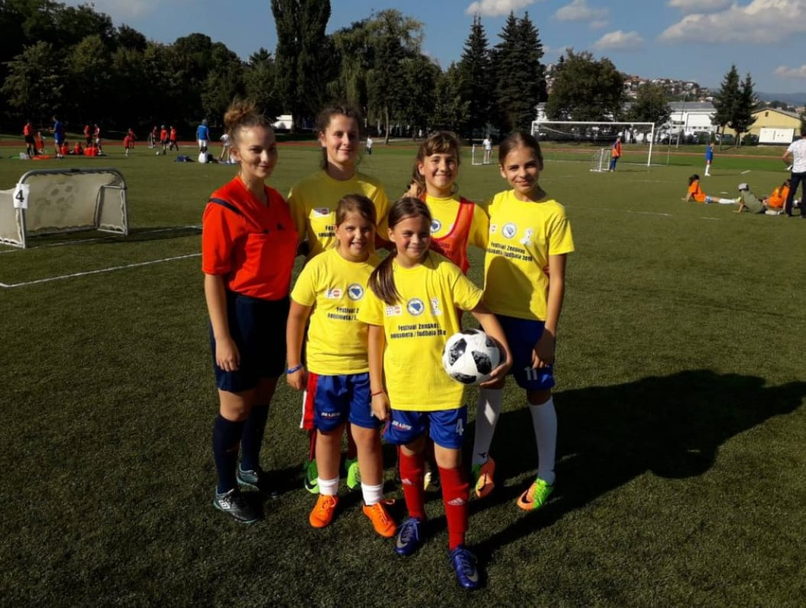
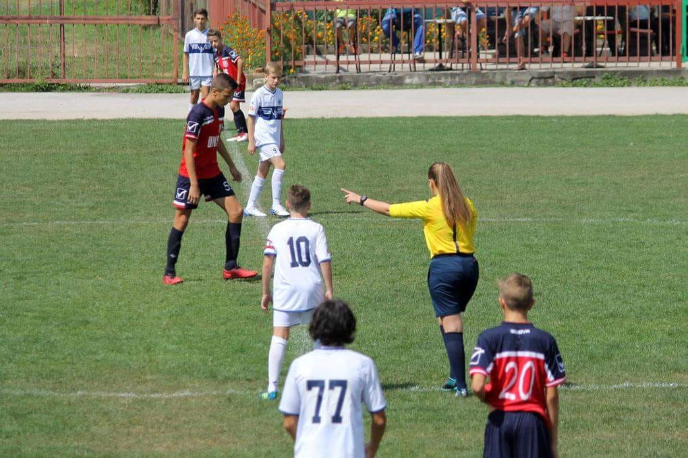
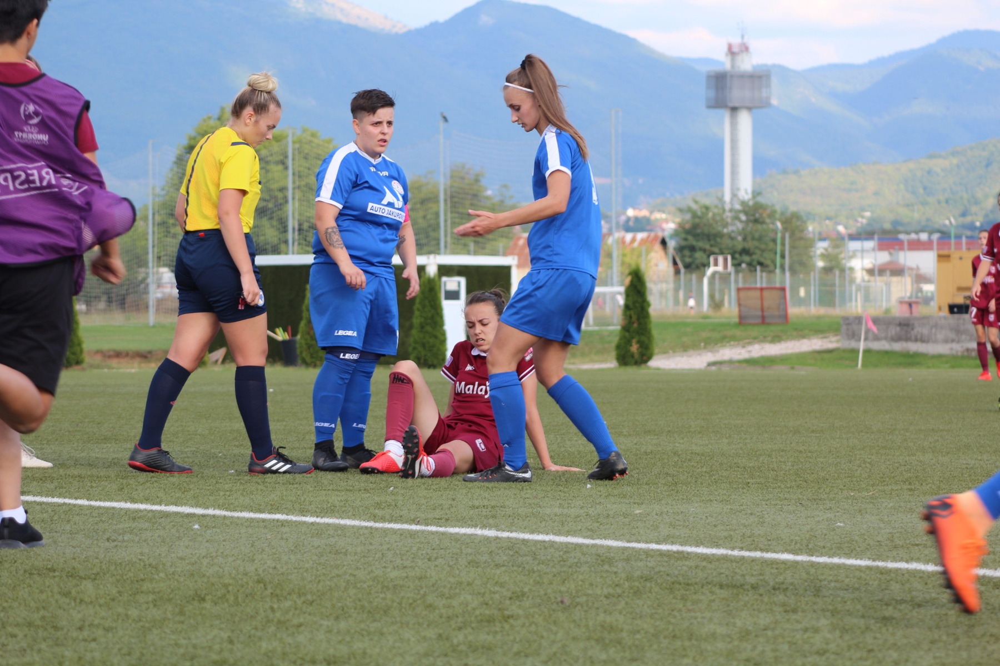
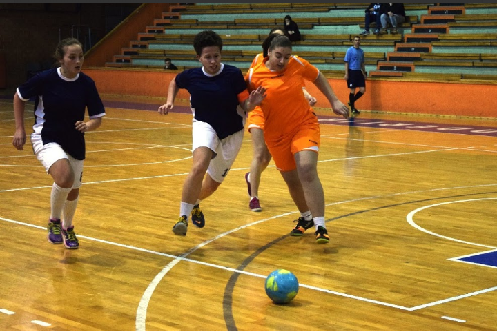
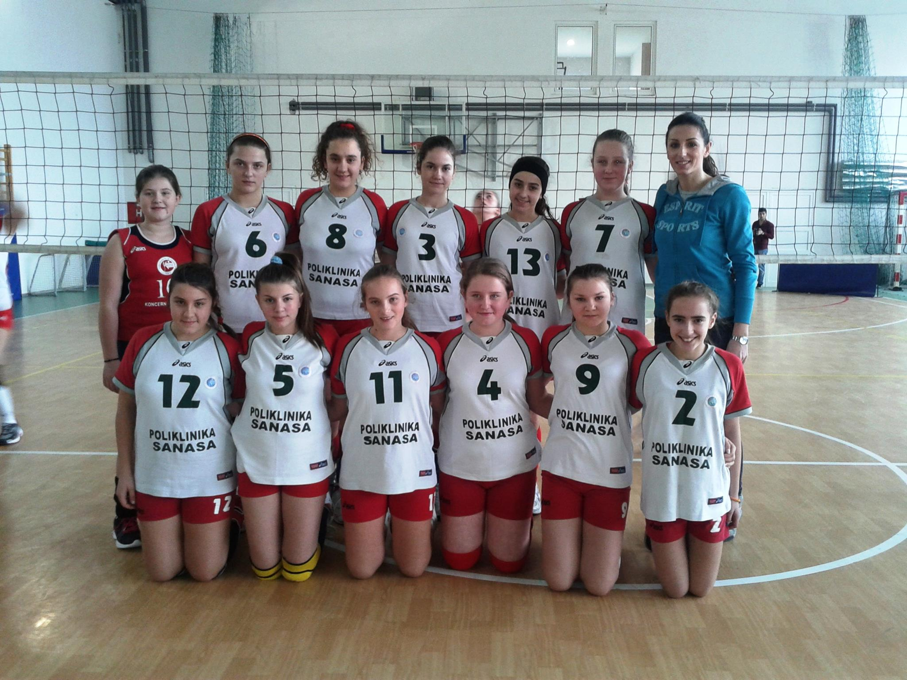
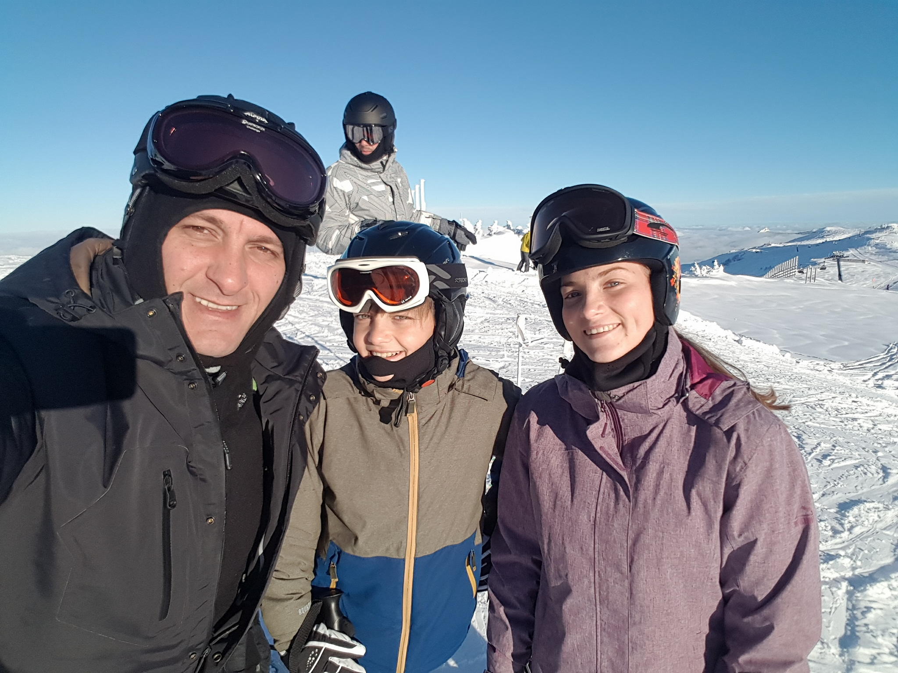

Moj prvi ženski fudbalski turnir od samog početka suđenja. Ovo je bilo u Junu 2019 godine. Bila sam delegirana od strane Nogometnog Saveza BiH, održan je u Sarajevu, na pomoćnom stadionu Koševo. Ekipe su došle iz cijele Bosne i Hercegovine.

Turnir za djevojčice
Juli 2019 godine, učestvovala sam na jednom turniru koji je imao cilj druženja i upoznavanja, a iso tako da potakne sve djevojčice koje žele da treniraju fudbal ili neku drugu disciplinu, da to odmah urade i da se ne stide i da ne bježe od svojih snova i ciljeva.

Prvenstvena utakmica
Ovo je utakmica uzrasta pionira koja je odigrana u Vogošći na glavnom stadionu "Hakija Mršo". Utakmica se izgarla između FK "Unis" i FK "Željezničar". Bila sam glavna sutkinja i imala sam svoja dva još pomoćnika.

Prva ženska Federalna liga
Dakle, trenutno sam sutkinja na Prvoj Ženskoj Federalnoj ligi, Sutkinja A liste. Ova utakmica se igrala u Butmiru, u Kampu, između seniorki FK "Sarajevo" i NK "Sana 2014". Ovo je jedna situacija na utakmici, gdje je počinjen prekršaj nad igračicom Sarajeva.

Fudbal
Pa nemam nekog pretjeranog iskustva u fudbalu, jedino što sam igrala za svoju srednju školu na takmičenju Liga Srednjih škola. 4 godine sam na taj način predstavljala svoju školu i 2016.godine smo osvojili drugo mjesto. Ali opet kažem sportski sam duh, pa tako volim svaku disciplinu sporta.

Odbojka
Ja sam možda osoba koja kad nešto savlada, nauči i stekne odlično znanje iz toga, prelazi na nešto drugo da nauči i savlada. Pa tako sam prešla da treniram odbojku u odbojkaškom klubu "Vogošća". Igrala sam za kadetsku, juniorsku i ponekad za seniorsku selekciju. Išli na razna takmičenja, putovanja i pripreme. U srednjoj školi sam također nastupala i igrali smo turnir, zvani Gimnazijada, koja se održava svake godine gdje učestvuju sve gimnazije sa područja Kantona Sarajevo. Najčešću poziciju koju sam igrala u odbojci je tehničar, ali znala sam igrati i libera.

Skijanje
Kada bih mogla opisati sebe u dvije riječi onda bi to bila sportski duh. Od malena još, pa sve do danas se bavim nekim sportom. Sa nekih 3ipo godine sam naučila plivati i ubrzo nakontoga krećem da učim da skijam. U početku je to prvo bilo sa mojim ocem, a onda nakon nekog perioda sam krenula u školu skijanja. Svoje prve poteze skijanja napravila sam na našoj Olimpijskoj planini Igman
Snimak skijanja
Ovaj video prikazuje jedan naš zimski dan na Jahorini gdje sam provela sa prijateljima. Također kroz ovaj video možete vidjeti kako skijam, jer je cilj bio da se snimimo kako skijamo.